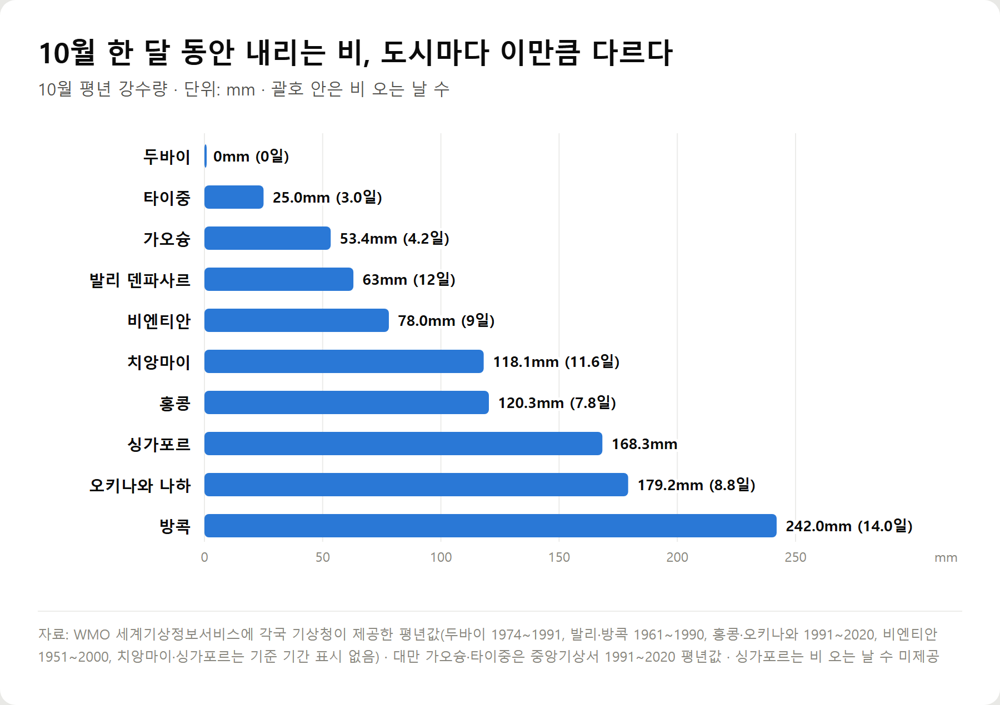
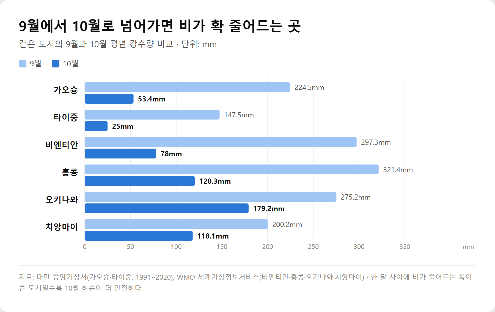
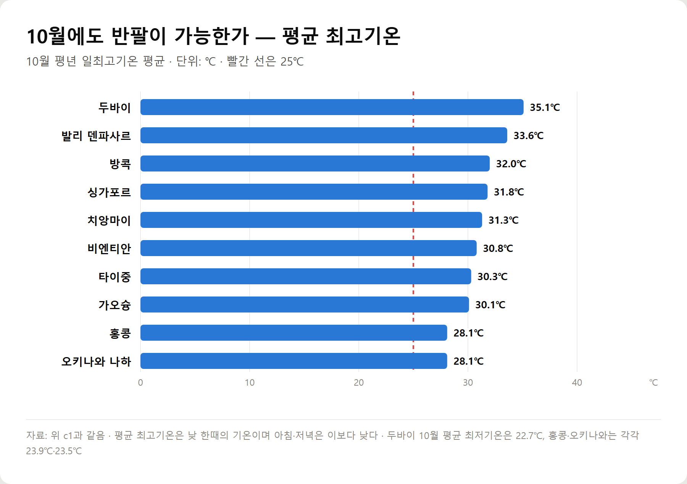
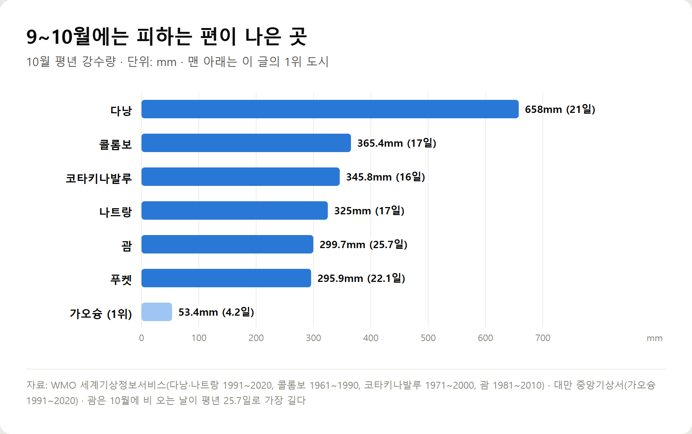

<meta charset="utf-8">
<title>9~10월 해외여행 가기 좋은 따뜻한 나라 TOP 10 — 나의 투자 그리고 행복한 여행</title>
<meta name="description" content="9~10월 해외여행지를 강수량으로 비교했습니다. 대만 가오슝·타이중, 발리, 비엔티안, 홍콩, 오키나와 등 비가 적고 따뜻한 도시 10곳과 이 시기 피해야 할 곳, 왕복 항공권 시세와 비자·입국 서류를 2026년 9월 기준으로 정리했습니다.">
<meta name="viewport" content="width=device-width, initial-scale=1">
<link rel="canonical" href="https://danielmoon82.github.io/moon/posts/warm-countries-sep-oct-2026-09-16.html">
<link rel="preconnect" href="https://fonts.googleapis.com">
<link rel="preconnect" href="https://fonts.gstatic.com" crossorigin>
<link rel="stylesheet" href="https://fonts.googleapis.com/css2?family=Hahmlet:wght@400;600;800&family=IBM+Plex+Mono:wght@400;500&family=IBM+Plex+Sans+KR:wght@300;400;500;600&display=swap">

<style>
  :root{
    --paper:#F2EEE6;--surface:#FAF8F3;--surface-2:#E7E1D5;
    --ink:#191510;--ink-2:#4A4235;--ink-3:#7D7364;
    --line:#D6CEBF;--line-soft:#E4DDD0;--accent:#B06A15;--accent-bright:#C2761A;
    --up:#E5484D;--down:#3B82F6;
    --f-display:"Hahmlet",'Nanum Myeongjo',"Apple SD Gothic Neo",serif;
    --f-body:"IBM Plex Sans KR","Apple SD Gothic Neo","Malgun Gothic",sans-serif;
    --f-mono:"IBM Plex Mono","SFMono-Regular",Consolas,monospace;
    --pad:clamp(20px,5vw,64px);
  }
  @media (prefers-color-scheme:dark){
    :root:not([data-theme="light"]){
      --paper:#0B1120;--surface:#121A2C;--surface-2:#1A2439;
      --ink:#E9EEF7;--ink-2:#A9B5C9;--ink-3:#72809A;
      --line:#26314A;--line-soft:#1D2739;--accent:#E8A33D;--accent-bright:#F0B45C;
    }
  }
  *{box-sizing:border-box;}
  body{margin:0;background:var(--paper);color:var(--ink);font-family:var(--f-body);
    font-weight:300;font-size:1rem;line-height:1.75;-webkit-font-smoothing:antialiased;}
  a{color:inherit;}
  img{max-width:100%;height:auto;}
  .wrap{max-width:760px;margin:0 auto;padding-inline:var(--pad);}
  .nav{position:sticky;top:0;z-index:20;background:color-mix(in srgb,var(--paper) 88%,transparent);
    backdrop-filter:saturate(180%) blur(12px);border-bottom:1px solid var(--line);}
  .nav-in{display:flex;align-items:center;justify-content:space-between;height:58px;}
  .brand{font-family:var(--f-display);font-weight:600;font-size:1rem;letter-spacing:-.02em;text-decoration:none;}
  .back{font-family:var(--f-mono);font-size:.72rem;color:var(--ink-3);text-decoration:none;}
  .article{padding-block:clamp(40px,7vw,72px) clamp(56px,9vw,96px);}
  .eyebrow{font-family:var(--f-mono);font-size:.68rem;letter-spacing:.16em;text-transform:uppercase;
    color:var(--accent);margin:0 0 14px;}
  h1{font-family:var(--f-display);font-weight:800;font-size:clamp(1.6rem,4.4vw,2.3rem);
    line-height:1.3;letter-spacing:-.03em;margin:0 0 16px;}
  .byline{font-family:var(--f-mono);font-size:.72rem;color:var(--ink-3);
    padding-bottom:24px;border-bottom:1px solid var(--line);margin-bottom:32px;}
  h2{font-family:var(--f-display);font-weight:600;font-size:1.25rem;letter-spacing:-.02em;margin:42px 0 14px;}
  h3{font-family:var(--f-display);font-weight:600;font-size:1.05rem;letter-spacing:-.02em;
    margin:30px 0 10px;padding-top:14px;border-top:1px solid var(--line-soft);}
  h3 .code{font-family:var(--f-mono);font-size:.7rem;font-weight:400;color:var(--ink-3);margin-left:6px;}
  p{margin:0 0 18px;color:var(--ink-2);}
  ul.checks{margin:0 0 18px;padding-left:20px;color:var(--ink-2);}
  ul.checks li{margin-bottom:8px;font-size:.94rem;}
  table{width:100%;border-collapse:collapse;font-size:.88rem;margin-bottom:8px;}
  th{font-family:var(--f-mono);font-size:.66rem;letter-spacing:.06em;text-transform:uppercase;
    color:var(--ink-3);text-align:right;padding:8px 6px;border-bottom:1px solid var(--line);}
  th:first-child{text-align:left;}
  td{padding:10px 6px;border-bottom:1px solid var(--line-soft);color:var(--ink-2);}
  td.num{font-family:var(--f-mono);text-align:right;font-variant-numeric:tabular-nums;}
  td.up{color:var(--up);} td.down{color:var(--down);}
  .scroll{overflow-x:auto;}
  figure{margin:22px 0;}
  figure img{display:block;border-radius:3px;background:var(--surface-2);}
  figcaption{margin-top:8px;font-family:var(--f-mono);font-size:.68rem;color:var(--ink-3);text-align:center;}
  .note{margin-top:34px;padding:16px 18px;border-left:3px solid var(--accent);
    background:var(--surface);border-radius:0 3px 3px 0;}
  .note p{margin:0;font-size:.85rem;color:var(--ink-3);}
  .foot{border-top:1px solid var(--line);background:var(--surface);padding-block:30px 38px;}
  .foot p{margin:0;font-size:.8rem;color:var(--ink-3);}
</style>

<nav class="nav">
  <div class="wrap nav-in">
    <a class="brand" href="../index.html">나의 투자 그리고 행복한 여행</a>
    <a class="back" href="../index.html#stocks">← 시황으로</a>
  </div>
</nav>

<main class="wrap article">
  <p class="eyebrow">Market</p>
  <h1>9~10월 해외여행 가기 좋은 따뜻한 나라 TOP 10 (2026년 9월 기준)</h1>
  <p class="byline">여행 · 2026-09-16 기준</p>

  <p>9~10월에 떠날 따뜻한 나라를 고를 때 기준이 되는 건 기온이 아니라 강수량입니다. 이 시기 동남아 상당수는 우기이고, 서태평양은 태풍이 가장 많은 달을 지납니다.</p>
  <p>WMO 세계기상정보서비스에 각국 기상청이 제공한 평년값과 대만 중앙기상서 1991~2020 평년값으로, 9월과 10월의 강수량·강수일수·평균 최고기온을 도시별로 대조했습니다.</p>
  <p>여기에 인천 출발 왕복 항공권 시세와 비자·입국 서류 조건을 더해 10곳을 순위로 정리했습니다.</p>
  <p><b>이 포스팅은 네이버 쇼핑 커넥트 활동의 일환으로, 판매 발생 시 수수료를 제공받습니다.</b></p>
  <p>※ 이 글에는 클룩 제휴 링크가 들어 있습니다. 링크를 통해 예약하시면 글쓴이가 일정 수수료를 받을 수 있으며, 예약하시는 가격은 같습니다.</p>
  <h2>9~10월 해외여행, 따뜻한 곳보다 비가 문제다</h2>
  <p>9월과 10월은 한국에서 떠나기 좋은 시기입니다. 연휴가 있고, 아직 성수기 요금이 붙기 전이며, 남쪽 나라는 충분히 덥습니다.</p>
  <p>문제는 이 시기가 적도 부근에서 <b>우기의 끝자락</b>이라는 점입니다. 태국·베트남 중부·필리핀·말레이시아 일부는 9~10월에 연중 비가 가장 많은 달을 지납니다. 같은 '30도, 반팔'이어도 하루에 세 시간씩 비가 오면 일정이 반으로 줄어듭니다.</p>
  <p>그래서 이 글은 순서를 바꿨습니다. 따뜻한 곳을 먼저 모은 뒤 비가 적은 곳을 고른 게 아니라, <b>10월 강수량이 적은 도시부터 줄을 세우고</b> 그중 평균 최고기온이 25도를 넘는 곳만 남겼습니다.</p>
  <h2>결론부터 — 9~10월 따뜻한 나라 TOP 10</h2>
  <div style="overflow-x:auto"><table border="1" cellpadding="6" style="border-collapse:collapse;width:100%;font-size:14px;line-height:1.5"><thead><tr><th style="background:#f3f5f8">순위</th><th style="background:#f3f5f8">도시 / 나라</th><th style="background:#f3f5f8">10월 강수량</th><th style="background:#f3f5f8">비 오는 날</th><th style="background:#f3f5f8">10월 평균최고</th><th style="background:#f3f5f8">추천 시기</th></tr></thead><tbody><tr><td>1</td><td>가오슝 / 대만</td><td>53.4mm</td><td>4.2일</td><td>30.1℃</td><td>10월 내내</td></tr><tr><td>2</td><td>타이중 / 대만</td><td>25.0mm</td><td>3.0일</td><td>30.3℃</td><td>10월 내내</td></tr><tr><td>3</td><td>덴파사르 / 인도네시아 발리</td><td>63mm</td><td>12일</td><td>33.6℃</td><td>9월이 더 좋음</td></tr><tr><td>4</td><td>비엔티안 / 라오스</td><td>78.0mm</td><td>9일</td><td>30.8℃</td><td>10월 중순부터</td></tr><tr><td>5</td><td>홍콩</td><td>120.3mm</td><td>7.8일</td><td>28.1℃</td><td>10월 내내</td></tr><tr><td>6</td><td>나하 / 일본 오키나와</td><td>179.2mm</td><td>8.8일</td><td>28.1℃</td><td>10월 내내</td></tr><tr><td>7</td><td>치앙마이 / 태국</td><td>118.1mm</td><td>11.6일</td><td>31.3℃</td><td>10월 하순</td></tr><tr><td>8</td><td>두바이 / 아랍에미리트</td><td>0.0mm</td><td>0.0일</td><td>35.1℃</td><td>10월 하순</td></tr><tr><td>9</td><td>싱가포르</td><td>168.3mm</td><td>자료 없음</td><td>31.8℃</td><td>9월이 더 좋음</td></tr><tr><td>10</td><td>방콕 / 태국</td><td>242.0mm</td><td>14.0일</td><td>32.0℃</td><td>10월 하순</td></tr></tbody></table></div>
  <figure><figcaption>10월 평년 강수량 비교 — 같은 '따뜻한 나라'라도 내리는 비의 양은 크게 다르다</figcaption></figure>
  <p>순위는 강수량만으로 매기지 않았습니다. 비가 적은 순서로는 두바이가 압도적이지만, 인천에서 아홉 시간이 걸리고 왕복 항공권이 59만~104만원대라 접근성에서 내려갔습니다.</p>
  <h2>어떻게 골랐나 — 네 가지 기준</h2>
  <ul class="checks">
    <li><b>비</b> — 10월 평년 강수량과 비 오는 날 수. 가장 큰 비중을 뒀습니다.</li>
    <li><b>기온</b> — 10월 평균 최고기온이 25도를 넘는 곳만 남겼습니다. 아침저녁은 이보다 낮습니다.</li>
    <li><b>접근성</b> — 인천 직항 여부, 비행 시간, 왕복 항공권 시세.</li>
    <li><b>입국 절차</b> — 무비자 여부와 온라인 입국신고 필요 여부.</li>
  </ul>
  <p>기후 숫자는 WMO 세계기상정보서비스에 각국 기상청이 올린 평년값을 그대로 썼습니다. 기준 기간은 도시마다 다릅니다. 홍콩·오키나와는 1991~2020년, 발리와 방콕은 1961~1990년, 두바이는 1974~1991년 자료입니다. 대만은 중앙기상서의 1991~2020년 값을 따로 받았습니다.</p>
  <p>평년값은 '평균적으로 이렇다'는 뜻이지 올해가 그렇다는 보장은 아닙니다. 출발 2주 전부터 실제 예보를 함께 보시는 게 좋습니다.</p>
  <h2>9월에서 10월로 넘어가면 비가 확 줄어드는 곳</h2>
  <figure><figcaption>같은 도시의 9월과 10월 평년 강수량 — 한 달 차이로 절반 아래까지 떨어지는 곳들</figcaption></figure>
  <p>이 글에서 가장 쓸모 있는 그림입니다. 몇몇 도시는 9월과 10월 사이에 우기가 끝나면서 강수량이 급격히 떨어집니다.</p>
  <ul class="checks">
    <li>가오슝 224.5mm → <b>53.4mm</b> (4분의 1 아래)</li>
    <li>타이중 147.5mm → <b>25.0mm</b></li>
    <li>비엔티안 297.3mm → <b>78.0mm</b></li>
    <li>홍콩 321.4mm → <b>120.3mm</b></li>
    <li>치앙마이 200.2mm → <b>118.1mm</b></li>
    <li>오키나와 나하 275.2mm → <b>179.2mm</b></li>
  </ul>
  <p>같은 나라를 9월 초에 가느냐 10월 하순에 가느냐로 여행이 달라진다는 뜻입니다. 일정을 며칠 미룰 수 있다면 10월 중순 이후가 유리합니다.</p>
  <h2>10월에도 반팔이 되는가 — 평균 최고기온</h2>
  <figure><figcaption>10월 평년 일최고기온 평균 — 빨간 선은 25도</figcaption></figure>
  <p>열 곳 모두 10월 평균 최고기온이 28도를 넘습니다. 낮에는 반팔로 충분합니다.</p>
  <p>다만 아침저녁은 다릅니다. 홍콩의 10월 평균 최저기온은 23.9도, 오키나와는 23.5도, 두바이는 22.7도입니다. 얇은 긴팔 하나는 챙기는 편이 낫습니다.</p>
  <p>두바이는 10월 평균 최고기온이 35.1도로 이 목록에서 가장 덥습니다. 9월은 38.7도까지 올라가므로, 두바이를 고른다면 10월 하순이 낫습니다.</p>
  <h2>1위 가오슝 — 10월에 비가 4일밖에 안 온다</h2>
  <p>대만 남부의 가오슝은 10월 평년 강수량이 53.4mm, 비 오는 날이 4.2일입니다. 9월의 224.5mm에서 넉 달치가 한 달 만에 빠진 셈입니다. 평균 최고기온은 30.1도로 여름옷 그대로 다닐 수 있습니다.</p>
  <p>인천에서 두 시간 반이고, 왕복 항공권은 9월 기준 23만~48만원대, 최저가는 21만원대로 조회됐습니다. 90일 무비자이고, 종이 입국카드는 2025년 10월 1일에 없어져 온라인 TWAC만 미리 작성하면 됩니다.</p>
  <ul class="checks">
    <li><b>좋은 점</b> — 비가 거의 없고, 지하철과 경전철로 시내 이동이 쉽고, 야시장 물가가 타이베이보다 낮다</li>
    <li><b>아쉬운 점</b> — 관광지 수는 타이베이보다 적다. 10월에도 한낮 햇볕이 강하다</li>
    <li><b>이런 분께</b> — 짧은 일정으로 날씨 실패 확률을 최소화하고 싶은 분</li>
  </ul>
  <div style="text-align:center;margin:30px 0"><a href="https://affiliate.klook.com/redirect?aid=135164&aff_adid=1433404&k_site=https%3A%2F%2Fwww.klook.com%2Fko%2Factivity%2F132311-esim-taiwan-with-high-speed-and-stable-internet-connection%2F" target="_blank" rel="nofollow sponsored noopener" style="display:inline-block;padding:15px 28px;background:#E34948;color:#fff;font-weight:700;font-size:18px;text-decoration:none;border-radius:8px"><b>▶ 대만에서 쓸 5G 무제한 eSIM 보기 (클룩)</b></a></div>
  <h2>2위 타이중 — 이 목록에서 비가 가장 적은 도시</h2>
  <p>타이중의 10월 평년 강수량은 25.0mm, 비 오는 날은 3.0일입니다. 두바이를 빼면 가장 낮습니다. 평균 최고기온은 30.3도입니다.</p>
  <p>인천~타이중 왕복 항공권은 10월 기준 24만~34만원대, 최저가 18만원대로 가오슝보다 낮게 조회됐습니다. 가오슝과 함께 묶어 고속철도로 이동하는 일정도 무리가 없습니다.</p>
  <ul class="checks">
    <li><b>좋은 점</b> — 10월 강수 25mm, 항공권이 저렴하고 도시 규모에 비해 붐비지 않는다</li>
    <li><b>아쉬운 점</b> — 바다를 보러 가는 곳은 아니다. 대중교통은 가오슝보다 불편하다</li>
    <li><b>이런 분께</b> — 예산을 아끼면서 비 없는 날씨를 확실히 잡고 싶은 분</li>
  </ul>
  <h2>3위 발리 덴파사르 — 9월이 건기의 마지막 달</h2>
  <p>발리는 이 목록에서 유일하게 <b>9월이 10월보다 나은</b> 곳입니다. 덴파사르의 9월 평년 강수량은 47mm에 비 오는 날 8일, 10월은 63mm에 12일입니다. 건기가 10월을 지나며 서서히 끝납니다.</p>
  <p>10월 평균 최고기온은 33.6도로 이 목록에서 두바이 다음으로 덥습니다. 왕복 항공권은 평균 70만원대, 최저 41만원대로 조회됐습니다.</p>
  <p>입국에는 돈이 듭니다. 도착비자가 50만 루피아(약 3만9천원), 발리 관광세가 15만 루피아(약 1만2천원)로 따로 붙습니다. 관광세는 공식 사이트에서 미리 내면 공항에서 줄을 덜 섭니다.</p>
  <ul class="checks">
    <li><b>좋은 점</b> — 9월 강수 47mm, 숙소 선택지가 넓고 해변과 내륙을 한 번에 본다</li>
    <li><b>아쉬운 점</b> — 비행시간이 길고 도착비자·관광세가 추가된다. 10월부터 비가 늘기 시작한다</li>
    <li><b>이런 분께</b> — 일주일 이상 머물며 해변과 우붓을 함께 보고 싶은 분</li>
  </ul>
  <div style="text-align:center;margin:30px 0"><a href="https://affiliate.klook.com/redirect?aid=135164&aff_adid=1433407&k_site=https%3A%2F%2Fwww.klook.com%2Fko%2Factivity%2F30245-premium-private-ngurah-rai-airport-transfers-bali%2F" target="_blank" rel="nofollow sponsored noopener" style="display:inline-block;padding:15px 28px;background:#E34948;color:#fff;font-weight:700;font-size:18px;text-decoration:none;border-radius:8px"><b>▶ 발리 응우라라이 공항 프라이빗 픽업 보기 (클룩)</b></a></div>
  <h2>4위 비엔티안 — 10월에 우기가 끝난다</h2>
  <p>라오스 비엔티안은 9월 297.3mm에서 10월 78.0mm로 떨어집니다. 비 오는 날도 17일에서 9일로 줄어듭니다. 10월 평균 최고기온은 30.8도입니다.</p>
  <p>왕복 항공권은 9월 기준 31만~59만원대, 최저 27만원대였습니다. 30일 무비자이고 여권 잔여 기간 6개월 이상이면 됩니다.</p>
  <ul class="checks">
    <li><b>좋은 점</b> — 10월 중순부터 건기, 물가가 낮고 사람이 적다</li>
    <li><b>아쉬운 점</b> — 10월 초까지는 비가 남아 있다. 시내 대중교통이 약하다</li>
    <li><b>이런 분께</b> — 붐비지 않는 곳에서 천천히 지내고 싶은 분</li>
  </ul>
  <h2>5위 홍콩 — 10월이 일 년 중 가장 쾌적한 달</h2>
  <p>홍콩은 9월 321.4mm에서 10월 120.3mm로 떨어지고, 비 오는 날은 7.8일까지 줄어듭니다. 10월 평균 최고기온 28.1도, 평균 최저 23.9도로 습도도 여름보다 낮습니다.</p>
  <p>왕복 항공권은 10월 기준 22만~36만원대로 조회됐습니다. 90일 무비자이고 별도 온라인 입국신고가 없습니다.</p>
  <ul class="checks">
    <li><b>좋은 점</b> — 비가 적고 습도가 내려간다. 비행 3시간 반, 입국 절차가 단순하다</li>
    <li><b>아쉬운 점</b> — 숙박비가 이 목록에서 가장 비싼 축이다</li>
    <li><b>이런 분께</b> — 짧게 다녀오면서 도시 여행을 하고 싶은 분</li>
  </ul>
  <h2>6위 오키나와 나하 — 태풍이 줄어드는 달</h2>
  <p>나하의 10월 평년 강수량은 179.2mm, 비 오는 날 8.8일, 평균 최고기온 28.1도입니다. 9월(275.2mm)보다 낫습니다.</p>
  <p>오키나와에서 9~10월의 진짜 변수는 강수량보다 <b>태풍</b>입니다. 일본 기상청 평년값으로 9월은 태풍이 5.0개 발생해 3.3개가 일본에 접근하지만, 10월에는 3.4개 발생·1.7개 접근으로 절반 수준입니다.</p>
  <p>왕복 항공권은 9월 기준 25만~47만원대였습니다. 90일 무비자이며 Visit Japan Web으로 입국 심사를 미리 등록할 수 있습니다.</p>
  <ul class="checks">
    <li><b>좋은 점</b> — 비행 2시간대, 10월에도 바다 물놀이가 가능하다</li>
    <li><b>아쉬운 점</b> — 9월은 태풍 확률이 가장 높은 달이다. 렌터카 없이는 이동이 불편하다</li>
    <li><b>이런 분께</b> — 짧은 일정으로 바다를 보고 싶은 분</li>
  </ul>
  <div style="text-align:center;margin:30px 0"><a href="https://affiliate.klook.com/redirect?aid=135164&aff_adid=1433406&k_site=https%3A%2F%2Fwww.klook.com%2Fko%2Factivity%2F1421-churaumi-aquarium-okinawa%2F" target="_blank" rel="nofollow sponsored noopener" style="display:inline-block;padding:15px 28px;background:#E34948;color:#fff;font-weight:700;font-size:18px;text-decoration:none;border-radius:8px"><b>▶ 오키나와 츄라우미 수족관 입장권 보기 (클룩)</b></a></div>
  <h2>7위 치앙마이 — 10월 하순부터가 진짜</h2>
  <p>치앙마이는 10월 평년 강수량 118.1mm, 비 오는 날 11.6일입니다. 9월(200.2mm·17.2일)보다 크게 낫지만, 10월 초순까지는 우기가 남아 있습니다. 10월 하순부터 11월이 이 도시의 최적기입니다.</p>
  <p>평균 최고기온 31.3도, 평균 최저 22.1도로 아침저녁이 선선합니다. 왕복 항공권은 10월 기준 27만~39만원대였습니다.</p>
  <ul class="checks">
    <li><b>좋은 점</b> — 10월 하순부터 건기, 물가가 낮고 한 달 살기 수요가 많은 도시다</li>
    <li><b>아쉬운 점</b> — 10월 초에 가면 우기 끝물을 맞는다</li>
    <li><b>이런 분께</b> — 길게 머물며 생활비를 아끼고 싶은 분</li>
  </ul>
  <h2>8위 두바이 — 비가 아예 없는 대신 덥고 멀다</h2>
  <p>두바이의 9월과 10월 평년 강수량은 모두 0.0mm, 비 오는 날 0.0일입니다. 비 걱정이 전혀 없는 유일한 후보입니다.</p>
  <p>대신 9월 평균 최고기온이 38.7도입니다. 10월에 35.1도로 내려오고, 평균 최저는 22.7도까지 떨어집니다. 왕복 항공권은 10월 기준 59만~104만원대로 이 목록에서 가장 비쌉니다. 90일 무비자입니다.</p>
  <ul class="checks">
    <li><b>좋은 점</b> — 비 확률 0, 실내 시설이 잘 갖춰져 있다</li>
    <li><b>아쉬운 점</b> — 9월은 너무 덥다. 비행 9시간에 항공권이 비싸다</li>
    <li><b>이런 분께</b> — 비 때문에 일정이 밀리는 상황을 절대 만들고 싶지 않은 분</li>
  </ul>
  <h2>9위 싱가포르 — 비는 오지만 짧게 지나간다</h2>
  <p>싱가포르는 9월 124.9mm, 10월 168.3mm입니다. 숫자만 보면 중간이지만 이 도시의 비는 대개 짧은 스콜로 지나갑니다. 10월 평균 최고기온은 31.8도입니다.</p>
  <p>관광 목적 무비자로 들어가며, 도착 3일 전부터 SG Arrival Card를 무료로 제출해야 합니다. 체류 허가 기간은 입국 심사관이 정합니다.</p>
  <ul class="checks">
    <li><b>좋은 점</b> — 대중교통과 실내 시설이 좋아 비가 와도 일정이 덜 무너진다</li>
    <li><b>아쉬운 점</b> — 물가가 높다. 9월보다 10월에 비가 더 온다</li>
    <li><b>이런 분께</b> — 날씨보다 이동 편의와 안전을 우선하는 분</li>
  </ul>
  <h2>10위 방콕 — 10월 하순을 노려야 한다</h2>
  <p>방콕의 10월 평년 강수량은 242.0mm, 비 오는 날 14.0일로 이 목록에서 가장 많습니다. 그래도 9월(344.0mm·18.0일)보다는 낫고, 10월 하순부터 건기로 넘어갑니다.</p>
  <p>왕복 항공권이 9월 기준 19만~33만원대로 가장 저렴한 축이라 순위에 넣었습니다. 한국 여권은 비자면제협정에 따라 90일 무비자이며, 2026년 9월 15일 시행된 태국의 무비자 기간 축소 대상이 아닙니다. 다만 도착 72시간 전부터 TDAC(디지털 입국카드)를 온라인으로 작성해야 합니다.</p>
  <ul class="checks">
    <li><b>좋은 점</b> — 항공권과 물가가 낮고 일정 짜기가 쉽다</li>
    <li><b>아쉬운 점</b> — 10월 초중순은 비가 잦다. 한낮 습도가 높다</li>
    <li><b>이런 분께</b> — 예산이 가장 중요한 분, 10월 하순 출발이 가능한 분</li>
  </ul>
  <h2>9~10월에 피하는 편이 나은 곳</h2>
  <figure><figcaption>10월 평년 강수량 — 이 시기 여행지로는 권하기 어려운 곳들</figcaption></figure>
  <p>반대쪽도 숫자로 보겠습니다. 인기 여행지지만 9~10월만큼은 다른 달을 권하는 곳입니다.</p>
  <div style="overflow-x:auto"><table border="1" cellpadding="6" style="border-collapse:collapse;width:100%;font-size:14px;line-height:1.5"><thead><tr><th style="background:#f3f5f8">도시</th><th style="background:#f3f5f8">9월 강수량</th><th style="background:#f3f5f8">10월 강수량</th><th style="background:#f3f5f8">10월 비 오는 날</th><th style="background:#f3f5f8">이유</th></tr></thead><tbody><tr><td>다낭 / 베트남</td><td>394mm</td><td>658mm</td><td>21일</td><td>베트남 중부 우기의 정점</td></tr><tr><td>콜롬보 / 스리랑카</td><td>245.4mm</td><td>365.4mm</td><td>17일</td><td>10~11월 두 번째 몬순</td></tr><tr><td>코타키나발루 / 말레이시아</td><td>285.2mm</td><td>345.8mm</td><td>16일</td><td>10월이 9월보다 더 온다</td></tr><tr><td>나트랑 / 베트남</td><td>176mm</td><td>325mm</td><td>17일</td><td>9~12월 우기 시작</td></tr><tr><td>괌</td><td>359.9mm</td><td>299.7mm</td><td>25.7일</td><td>한 달의 5분의 4가 비 오는 날</td></tr><tr><td>푸켓 / 태국</td><td>386.5mm</td><td>295.9mm</td><td>22.1일</td><td>안다만해 쪽은 10월까지 우기</td></tr></tbody></table></div>
  <p>절대 못 간다는 뜻은 아닙니다. 다낭은 10월에도 호텔값이 내려가고 사람이 적습니다. 다만 '해변에서 보내는 일주일'을 계획했다면 기대와 어긋날 확률이 높습니다.</p>
  <p>말레이시아 페낭도 같은 이유로 빠졌습니다. 이쪽은 9~10월이 연중 비가 가장 많은 시기에 해당합니다.</p>
  <h2>태풍 — 9월이 정점, 10월에 절반으로 준다</h2>
  <p>동아시아·서태평양 노선을 고를 때는 태풍도 같이 봐야 합니다. 일본 기상청의 1991~2020년 30년 평균값입니다.</p>
  <div style="overflow-x:auto"><table border="1" cellpadding="6" style="border-collapse:collapse;width:100%;font-size:14px;line-height:1.5"><thead><tr><th style="background:#f3f5f8">구분</th><th style="background:#f3f5f8">9월</th><th style="background:#f3f5f8">10월</th><th style="background:#f3f5f8">연간</th></tr></thead><tbody><tr><td>태풍 발생 수</td><td>5.0개</td><td>3.4개</td><td>25.1개</td></tr><tr><td>일본 접근 수</td><td>3.3개</td><td>1.7개</td><td>11.7개</td></tr><tr><td>일본 상륙 수</td><td>1.0개</td><td>0.3개</td><td>3.0개</td></tr></tbody></table></div>
  <p>'접근'은 태풍 중심이 일본 국내 기상관서에서 300km 이내로 들어온 경우를 말합니다. 9월에서 10월로 넘어가면 접근 수가 절반가량으로 줄어듭니다.</p>
  <p>오키나와·대만·홍콩·필리핀 방면은 9월보다 10월 출발이 태풍 위험에서 유리합니다. 항공권을 살 때 일정 변경 조건을 함께 보시는 걸 권합니다.</p>
  <h2>비자와 입국 서류 — 미리 해야 하는 것만</h2>
  <div style="overflow-x:auto"><table border="1" cellpadding="6" style="border-collapse:collapse;width:100%;font-size:14px;line-height:1.5"><thead><tr><th style="background:#f3f5f8">나라</th><th style="background:#f3f5f8">무비자 체류</th><th style="background:#f3f5f8">미리 할 일</th><th style="background:#f3f5f8">비용</th></tr></thead><tbody><tr><td>대만</td><td>90일</td><td>TWAC 온라인 입국신고</td><td>무료</td></tr><tr><td>인도네시아(발리)</td><td>도착비자 30일</td><td>도착비자 + 발리 관광세</td><td>50만 + 15만 루피아</td></tr><tr><td>라오스</td><td>30일</td><td>여권 잔여 6개월 확인</td><td>없음</td></tr><tr><td>홍콩</td><td>90일</td><td>없음</td><td>없음</td></tr><tr><td>일본</td><td>90일</td><td>Visit Japan Web 등록</td><td>무료</td></tr><tr><td>태국</td><td>90일</td><td>TDAC(도착 72시간 전부터)</td><td>무료</td></tr><tr><td>아랍에미리트</td><td>90일</td><td>없음</td><td>없음</td></tr><tr><td>싱가포르</td><td>관광 무비자</td><td>SG Arrival Card(도착 3일 전부터)</td><td>무료</td></tr></tbody></table></div>
  <p>대만은 2025년 10월 1일부터 종이 입국카드를 없애고 온라인 TWAC로 바꿨습니다. 무료이며, 이민서 공식 사이트에서 작성합니다. 돈을 받는 대행 사이트가 검색 상단에 섞여 있으니 주소를 확인하세요.</p>
  <p>태국은 2026년 9월 15일부터 일부 국가의 무비자 기간을 30일로 줄였지만, 한국 여권은 양국 비자면제협정이 우선 적용돼 90일 그대로입니다. 출국 전 주태국 대한민국 대사관 공지에서 한 번 더 확인하시는 걸 권합니다.</p>
  <p>발리 관광세는 공식 사이트 lovebali.baliprov.go.id 에서 미리 냅니다. 도착 후에도 낼 수 있지만 공항에서 시간이 걸립니다.</p>
  <h2>왕복 항공권은 얼마나 하나</h2>
  <div style="overflow-x:auto"><table border="1" cellpadding="6" style="border-collapse:collapse;width:100%;font-size:14px;line-height:1.5"><thead><tr><th style="background:#f3f5f8">도시</th><th style="background:#f3f5f8">표시 기준 달</th><th style="background:#f3f5f8">일반적인 왕복 요금</th><th style="background:#f3f5f8">조회된 최저 왕복</th></tr></thead><tbody><tr><td>방콕</td><td>9월</td><td>199,362~331,371원</td><td>284,225원</td></tr><tr><td>가오슝</td><td>9월</td><td>230,343~482,239원</td><td>215,526원</td></tr><tr><td>홍콩</td><td>10월</td><td>229,512~365,071원</td><td>246,960원</td></tr><tr><td>타이중</td><td>10월</td><td>247,855~348,883원</td><td>187,238원</td></tr><tr><td>오키나와</td><td>9월</td><td>258,631~471,463원</td><td>259,978원</td></tr><tr><td>치앙마이</td><td>10월</td><td>273,449~396,029원</td><td>264,019원</td></tr><tr><td>비엔티안</td><td>9월</td><td>315,207~599,432원</td><td>274,796원</td></tr><tr><td>발리 덴파사르</td><td>평균 왕복</td><td>708,973원</td><td>413,345원</td></tr><tr><td>두바이</td><td>10월</td><td>590,556~1,048,238원</td><td>734,169원</td></tr></tbody></table></div>
  <p>모두 인천 출발 기준으로 2026년 9월 16일에 조회한 값입니다. 노선 페이지가 보여 주는 기준 달이 달라 그대로 적었습니다. 싱가포르는 9~10월 범위가 표시되지 않아 넣지 않았습니다.</p>
  <p>같은 노선도 출발 요일과 예약 시점에 따라 두 배 가까이 벌어집니다. 표의 '최저'는 특정 날짜에 붙은 값이라 일정을 맞출 수 있을 때만 의미가 있습니다.</p>
  <h2>따뜻한 나라로 갈 때 실제로 챙기는 것</h2>
  <p>9~10월의 따뜻한 나라 여행은 짐이 가벼운 대신 몇 가지가 갈립니다. 기내용 캐리어로 끝낼 수 있느냐, 하루 종일 지도를 켜 둘 배터리가 있느냐, 햇볕을 견딜 수 있느냐입니다.</p>
  <p>네이버 데이터랩 쇼핑인사이트에서 2026년 9월 1~15일 인기 검색어를 보면 패션잡화에서 캐리어가 11위, 기내용 캐리어가 73위, 선글라스가 118위였고 디지털·가전에서 보조배터리가 14위였습니다. 실제로 이 시기에 많이 찾는 물건들입니다.</p>
  <p><a href="https://brandconnect.naver.com/affiliates/996273855578848?channelProductNo=10218785304" target="_blank" rel="sponsored noopener">상품 보러 가기 — 셀본 56cm(20인치) 기내용 캐리어 74,900원</a></p>
  <p><b>기내용 캐리어</b> — 대만·홍콩·오키나와처럼 3~4일 일정이면 위탁 수하물 없이 끝낼 수 있습니다. 20인치(56cm)가 대부분 항공사의 기내 반입 기준에 맞습니다. 위 상품은 평점 4.8에 리뷰 10,255개입니다.</p>
  <p><a href="https://brandconnect.naver.com/affiliates/996274714153920?channelProductNo=10352481064" target="_blank" rel="sponsored noopener">상품 보러 가기 — 포켓쉴 20000mAh 기내반입 보조배터리 37,800원</a></p>
  <p><b>기내반입 보조배터리</b> — 더운 곳에서는 배터리가 눈에 띄게 빨리 닳습니다. 20,000mAh는 기내 반입 한도(160Wh) 안에 들어가지만, 위탁 수하물에는 넣을 수 없고 기내에 들고 타야 합니다. 위 상품은 평점 4.86에 리뷰 6,325개입니다.</p>
  <p><a href="https://brandconnect.naver.com/affiliates/996274757563328?channelProductNo=10481750557" target="_blank" rel="sponsored noopener">상품 보러 가기 — 톰디어 편광 선글라스 SG2 54,800원</a></p>
  <p><b>편광 선글라스</b> — 두바이 35도, 발리 33도의 한낮 햇볕은 한국의 여름과 다릅니다. 편광 렌즈는 바다와 도로 반사광을 줄여 줍니다.</p>
  <h2>9~10월 해외여행 자주 묻는 질문</h2>
  <p>Q. 9월과 10월 중에 언제가 더 낫나요?</p>
  <p>대부분의 도시는 10월이 낫습니다. 가오슝은 224.5mm에서 53.4mm로, 비엔티안은 297.3mm에서 78.0mm로 줄어듭니다. 예외는 발리와 싱가포르로, 이 두 곳은 9월이 더 건조합니다.</p>
  <p>Q. 추석 연휴에 가려는데 어디가 좋을까요?</p>
  <p>9월 출발이라면 발리와 싱가포르, 그리고 태풍 위험을 감수할 수 있다면 대만과 오키나와입니다. 9월은 태풍 발생이 평년 5.0개로 가장 많은 달이라 일정 변경이 가능한 항공권을 권합니다.</p>
  <p>Q. 비 오는 날 수가 적으면 종일 맑다는 뜻인가요?</p>
  <p>아닙니다. 열대 지역의 비는 짧고 강하게 지나가는 경우가 많습니다. 비 오는 날 수는 '하루 중 한 번이라도 기준량 이상 비가 온 날'을 셉니다. 강수량과 함께 봐야 합니다.</p>
  <p>Q. 평년값은 얼마나 믿을 수 있나요?</p>
  <p>30년 안팎의 평균이라 경향을 보는 데는 좋지만 특정 해를 맞히지는 못합니다. 이 글의 값도 기준 기간이 도시마다 달라 1961~1990년 자료인 곳과 1991~2020년 자료인 곳이 섞여 있습니다.</p>
  <p>Q. 대만은 가오슝과 타이중 중 어디가 낫나요?</p>
  <p>비만 보면 타이중(25.0mm)이고, 대중교통과 볼거리를 보면 가오슝입니다. 고속철도로 한 시간 거리라 둘을 묶어도 됩니다.</p>
  <p>Q. 발리 도착비자와 관광세는 공항에서 내도 되나요?</p>
  <p>됩니다. 다만 도착비자 50만 루피아와 관광세 15만 루피아를 현장에서 처리하면 줄을 서게 됩니다. 관광세는 공식 사이트에서 미리 결제할 수 있습니다.</p>
  <p>Q. 태국 무비자 기간이 줄었다던데요?</p>
  <p>2026년 9월 15일부터 일부 국가에 대해 60일에서 30일로 줄었습니다. 한국 여권은 양국 비자면제협정이 우선 적용돼 90일 그대로입니다. 대신 TDAC는 국적과 관계없이 작성해야 합니다.</p>
  <p>Q. 10월에 바다 물놀이가 되는 곳은 어디인가요?</p>
  <p>발리, 오키나와, 가오슝 인근이 가능합니다. 오키나와는 10월 평균 최고기온이 28.1도로 해수욕이 가능한 마지막 달에 해당합니다.</p>
  <p>Q. 항공권은 언제 사는 게 좋나요?</p>
  <p>표의 최저가들은 대부분 출발 2~4주 전 날짜에 붙어 있었습니다. 다만 연휴가 낀 날짜는 일찍 오르므로, 연휴 출발이면 미리 잡는 편이 안전합니다.</p>
  <p>Q. 우기에 가면 숙소가 정말 싼가요?</p>
  <p>다낭·푸켓처럼 우기가 뚜렷한 곳은 눈에 띄게 내려갑니다. 비가 와도 실내 위주로 지낼 계획이라면 선택지가 됩니다. 다만 해상 액티비티는 취소될 수 있습니다.</p>
  <p>Q. 두바이는 10월에도 너무 덥지 않나요?</p>
  <p>10월 평균 최고기온이 35.1도입니다. 9월의 38.7도보다는 낫고, 실내 냉방이 잘 돼 있어 한낮을 실내에서 보내는 일정이면 견딜 만합니다. 10월 하순이 더 낫습니다.</p>
  <p>Q. 이 목록에 유럽이나 남반구는 왜 없나요?</p>
  <p>'따뜻한 나라'라는 기준으로 비행시간과 항공권까지 함께 봤기 때문입니다. 9~10월의 남유럽은 좋은 시기지만 평균 최고기온이 25도 안팎으로 성격이 다릅니다.</p>
  <h2>정리하면</h2>
  <p>9~10월 해외여행은 따뜻한 곳을 찾는 문제가 아니라 비를 피하는 문제입니다. 같은 시기 같은 온도라도 다낭은 658mm, 타이중은 25mm가 내립니다.</p>
  <p>비 없는 날씨를 가장 확실히 잡으려면 대만(가오슝·타이중)이고, 9월 출발이면 발리, 10월 중순 이후라면 비엔티안과 홍콩이 유리합니다.</p>
  <p>출발 2주 전부터는 평년값 대신 실제 예보를 보시고, 대만 TWAC·태국 TDAC·싱가포르 SGAC처럼 미리 해야 하는 온라인 신고를 빠뜨리지 마세요.</p>
  <p><b>함께 보면 좋은 글</b> — <a href="https://danielmoon82.github.io/moon/posts/trip-checklist-2026-09-16.html">해외 장기여행 준비 체크리스트 — 출국 60일 전부터 순서대로</a></p>
  <div class="note"><p>기후 수치는 WMO 세계기상정보서비스에 각국 기상청이 제공한 평년값과 대만 중앙기상서 1991~2020 평년값, 태풍 수치는 일본 기상청 1991~2020 평년값입니다. 항공권은 2026년 9월 16일 인천 출발 기준 조회값이며, 환율은 같은 날 기준입니다. 비자·입국 규정은 자주 바뀌므로 출국 전 각국 공식 사이트와 재외공관 공지에서 다시 확인하세요.</p></div>
</main>

<footer class="foot">
  <div class="wrap"><p>나의 투자 그리고 행복한 여행 · 투자 판단의 참고 자료일 뿐, 매수·매도를 권유하지 않습니다.</p></div>
</footer>
